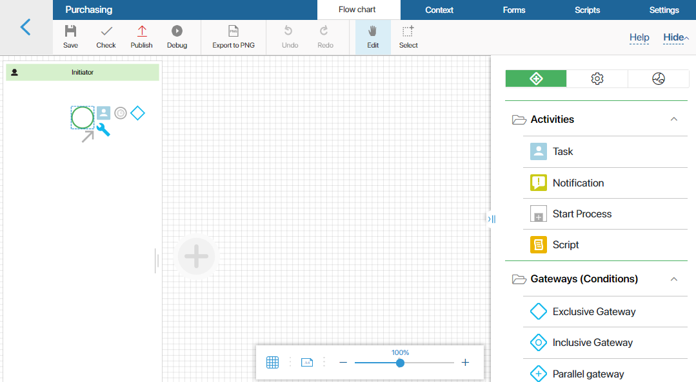
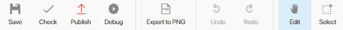
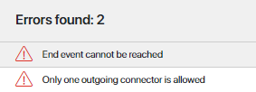
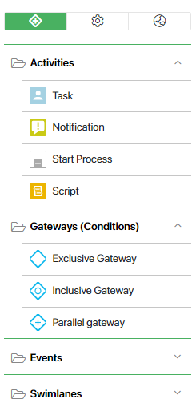

A business process model (flow chart diagram) describes all the actions that employees must perform in order to achieve a specific goal of the company. The description is done with such graphic elements as swimlanes, tasks, events, gateways, and notifications.
Process diagrams modeled in BRIX are executable. This means that all tasks, notifications, etc., will be automatically assigned to the relevant employees at the right stage.
All the default, imported or custom processes are available in Administration > Business Processes.
Create a new process
There are different process types available:
- A process associated with an app describes the logic of the app's operation. To learn more, see Business process associated with an app, Associate a process with an app.
- A process associated with a workspace implements the logic of the workspace. In such a process you can use and bind data of different apps belonging to this workspace. To learn more, see Workspace business processes.
- A process created on the company level can use data from different workspaces that do not have to be exported.
- Custom module process are described in Processes in modules.
For example, to create a process associated with an app, in the app settings select Business Processes and click + Process. The flow chart page of the process designer opens.
Process modeling page

At the top of the page there are 5 tabs:
- Flow Chart. A graphical diagram of the process.
- Statuses. This tab is displayed if the process is created at the app level. It contains the app statuses
- Context. Variables used in the process.
- Forms. Templates of task and event forms created for this process.
- Scripts. All the scripts used in this process.
- Settings. General process settings: start settings, name template, instance page form, API.
Below the tabs you can see the toolbar.

- Save. The process diagram will be saved as a draft, while the published process will not be modified. To quickly save the process, press the Ctrl+S combination while in the Flow chart tab.
- Check. The process diagram will be checked for logical errors. If the diagram contains errors, a warning will appear at the bottom of the page.

- Publish. The program can only execute published processes. Make sure to publish the process every time you modify it. The changes that are saved but not published will not be available to users during the execution of the business process.
- Debug. During debugging, the process operations are run step by step in real time. You can check the process logic, make sure that the task forms are created correctly, and test all the scripts.
- Export to PNG. The process diagram will be downloaded to your computer as an image.
- Undo. Undo the last action.
- Redo. Repeat the last undone action.
- Navigate. Use this button to move the modeling sheet.
- Select. Use this button to select multiple items in the diagram.
On the right side of the page, there is a panel with graphical elements that are used for the process modeling.

Standard elements tab :
System elements tab :
- Manage Status
- Await Status
- Create App Item
- Edit App Item
- App Item Permissions
- Assign Value
- Get Superior
- Send Document/App Item
- Approval
- End Approval
- Generate from Template
- Generate from File
- Convert to PDF
- Insert Watermark
- Sign
- Create Document Package
- Register Document
- BRIX Project activities
- BRIX CRM activities
- TO-DO
- Send Live Chat Message
- Send Live Chat Response
The Integration tab displays integrations with external systems, as well as elements that are parts of installed business solutions and activated modules:
Found a typo? Select it and press Ctrl+Enter to send us feedback